🍇 Vineyard Wildfire Impacts and Exposure: The 2019 Kincade Fire
Parastoo Farajpoor, Mahla Ardebili Pour, Mohammad Bagher Ghiasi, and Mohammadreza Narimani* (corresponding author)
Frontiers in Sustainability · Volume 7 · Article 1997548 · 27 October 2026 · Open access CC BY
Department of Biological and Agricultural Engineering · University of California, Davis
Why Vineyard Wildfire Impacts Need Their Own Framework
Wildfire risk in California is often framed through the wildland–urban interface. That framing is essential, but it leaves working agricultural landscapes—especially North Coast vineyards—as background. Winegrape systems can experience direct canopy impact, smoke exposure, disrupted road access, and delayed greenness recovery even when their spectral burn response looks milder than neighboring wildland.
For people searching Kincade Fire vineyard, Sonoma County wildfire agriculture, vineyard smoke exposure, or Sentinel-2 burn severity winegrape, this page summarizes an open-access Frontiers study led with corresponding author Mohammadreza Narimani at the University of California, Davis. Coauthors are Parastoo Farajpoor, Mahla Ardebili Pour, and Mohammad Bagher Ghiasi.
The electrically initiated 2019 Kincade Fire burned about 77,758 acres, destroyed 374 structures, and prompted Sonoma County’s largest evacuation. The paper analyzes 4,581 vineyard fields (8,813.2 ha) with Sentinel-2, OpenET, gridMET fire weather, soils, terrain, NOAA/NESDIS smoke polygons, an ignition-date OpenStreetMap road network, and surveyed structures.
Event-Anchored Geospatial Evidence Pathway
The study organizes evidence in four stages: hazard drivers (fire extent, spectral response, weather, electrical context, terrain, soils), exposed systems (vineyards, structures, roads, overhead smoke), multisystem analyses (pre-fire water status, boundary contrasts, accessibility, smoke, recovery), and a qualitative synthesis for planning attention. This template is designed so agricultural wildfire assessments do not collapse to a single dNBR map.
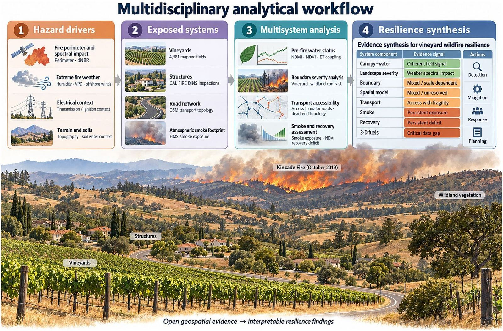
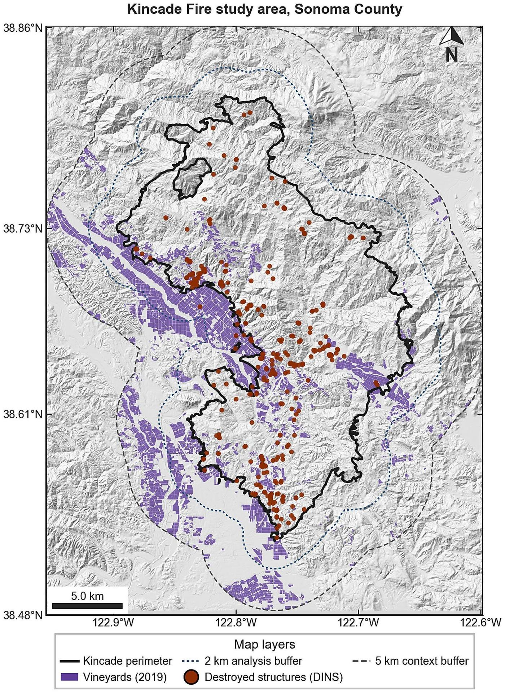
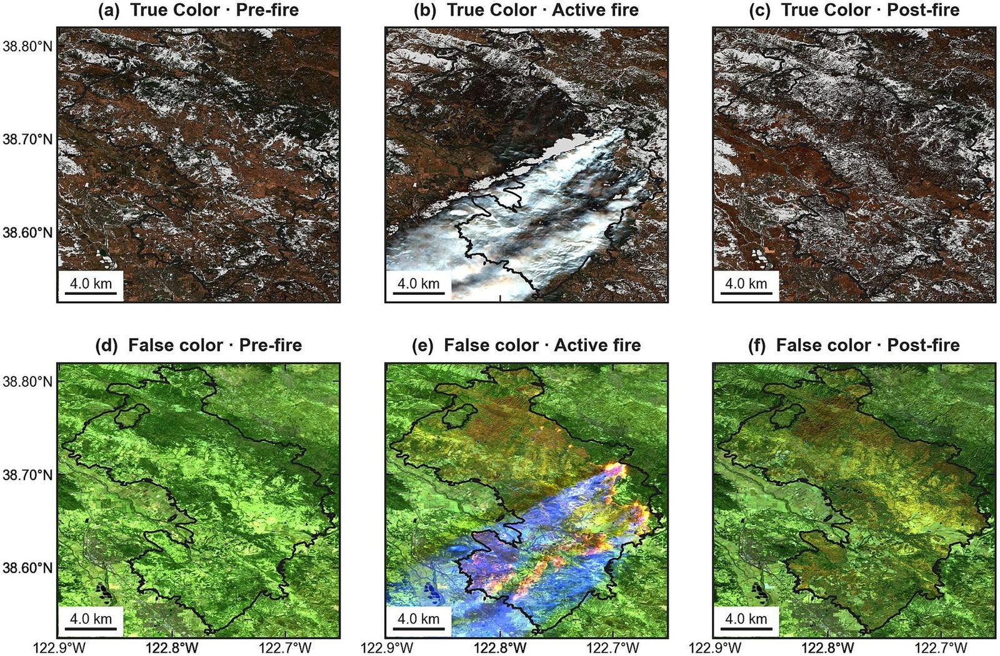
Pre-Fire Vineyard Canopy, Water Use, and Fire Weather
Field-mean pre-fire NDMI and NDVI were related to April–October OpenET evapotranspiration across the vineyard inventory (NDMI–ET Pearson r ≈ 0.567). OpenET is interpreted as seasonal crop water use—not metered irrigation. These baselines matter because autumn phenology and water status can confound raw pre–post spectral change.
gridMET humidity, vapor-pressure deficit, and wind place the event in a severe fire-weather window, and the documented electrical-transmission ignition timing frames Kincade as infrastructure and weather acting inside an agricultural–community system. Lidar, USGS 3DEP, and GEDI inventories show where three-dimensional structure data exist to support future fuel and canopy analyses.
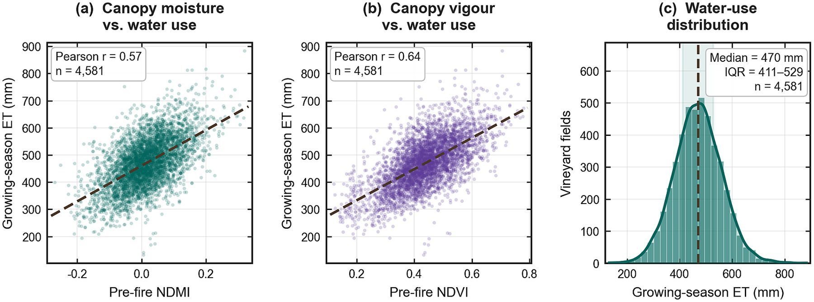
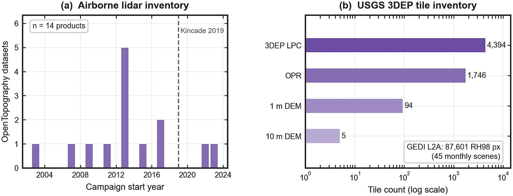
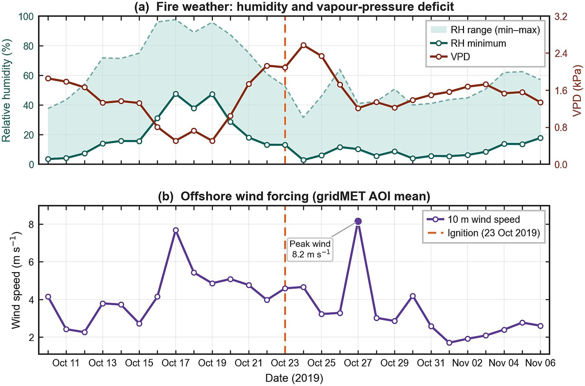
Sentinel-2 dNBR Contrast Is Not a Universal Firebreak Proof
Inside the perimeter, vineyard pixels showed substantially lower descriptive dNBR than wildland (means 0.130 vs 0.337). That landscape contrast is real—and easy to over-interpret. A segment-clustered vineyard–wildland boundary contrast at 100 m was small (τ = −0.0166) and fragile across bandwidths, slope continuity, donut specifications, and placebo checks.
A 250 m spatial generalized additive model, after conditioning on location, terrain, and water use, showed a negative vineyard-fraction association (joint-smooth coefficient −0.111) but left strong residual spatial autocorrelation (Moran’s I = 0.611). Lower spectral change therefore cannot be marketed as a proven, universal vineyard firebreak without those diagnostics.
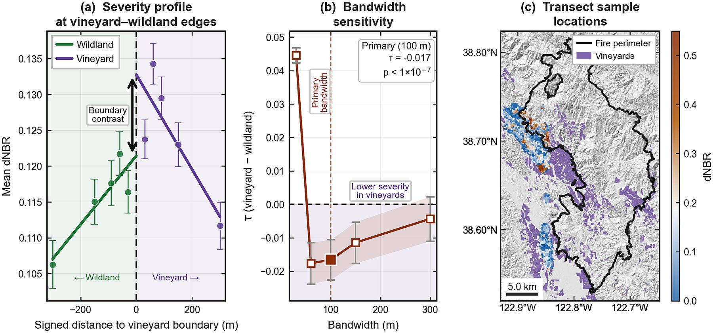
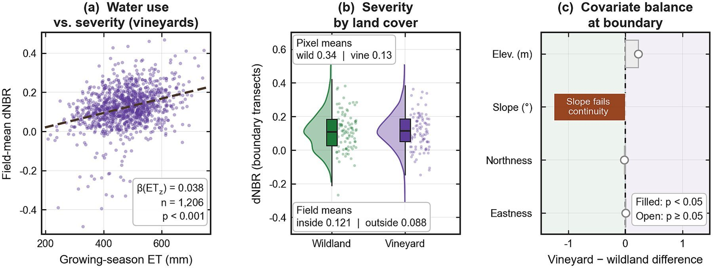
Vineyard Smoke Exposure, Road Access, and Post-Fire Recovery
All mapped vineyards intersected NOAA/NESDIS overhead smoke on at least one day (mean 7.78 potential smoke-days per field). Potential smoke exposure is not a PM2.5 dose or smoke-taint diagnosis, but it is a planning-relevant exposure indicator that spectral severity alone misses.
On the ignition-date road network, about 34.2% of nodes were dead ends, highlighting access fragility during evacuation and response. Through 2021, fields inside the perimeter showed a larger greenness deficit than fields outside (recovery ratios 0.815 inside vs 0.854 outside). Lower immediate spectral change therefore did not establish vine survival or recovered agricultural function.
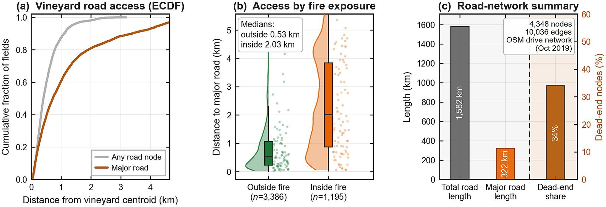
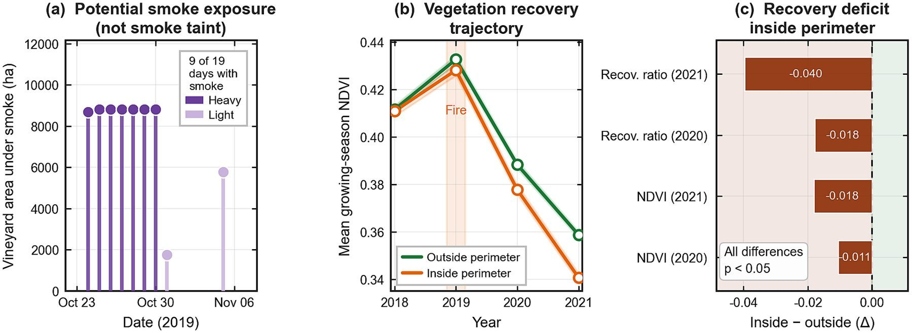
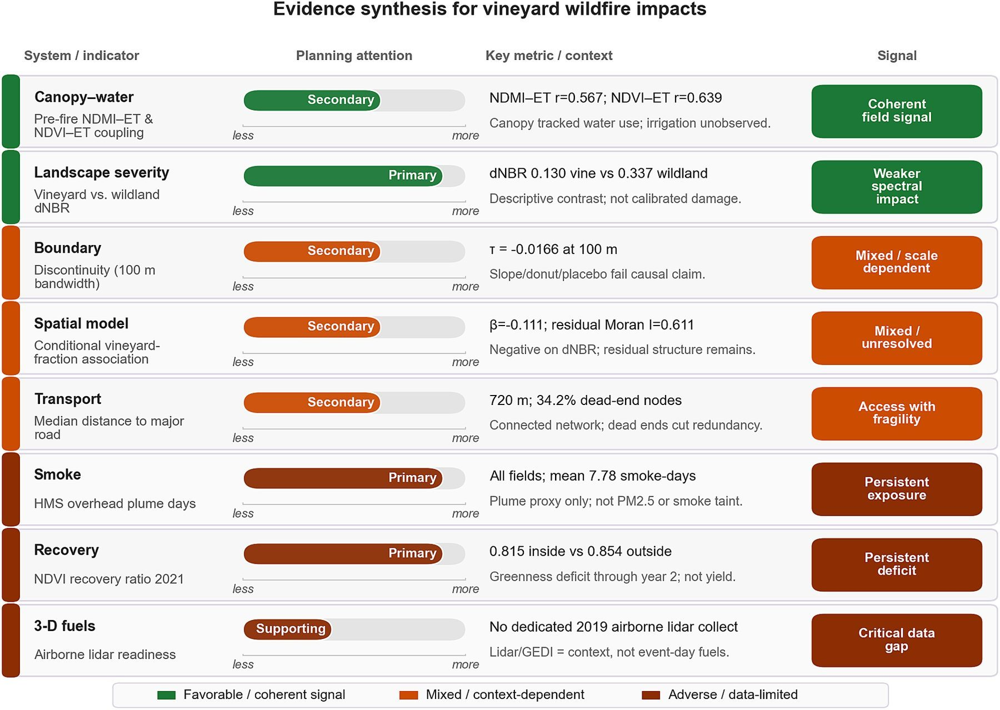
Spectral severity
Sentinel-2 dNBR and boundary tests describe immediate optical impact—not vine mortality by themselves.
Exposure & access
Smoke-day counts and dead-end network topology capture disruption pathways beyond burn maps.
Recovery evidence
Multi-year NDVI trajectories separate short-term spectral change from longer greenness deficits.
Paper and Citation
Please read and cite the publisher version when you use this work. This research card is a visual summary only—it is not a substitute for the article, figures, or methods in Frontiers.
Farajpoor, P., Pour, M. A., Ghiasi, M. B., & Narimani, M. (2026). Multisource remote sensing and geospatial analysis of vineyard wildfire impacts and exposure: the 2019 Kincade Fire. Frontiers in Sustainability, 7, 1997548.
DOI: 10.3389/frsus.2026.1997548 · Open access under CC BY 4.0
Contact
Mohammadreza Narimani
PhD Candidate, University of California, Davis